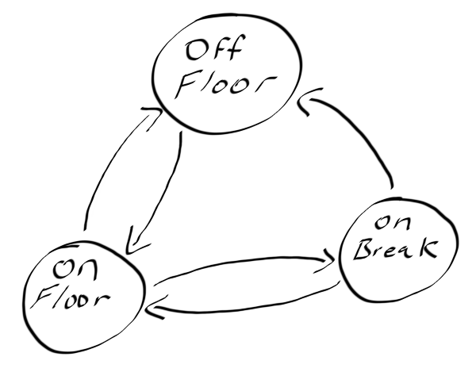
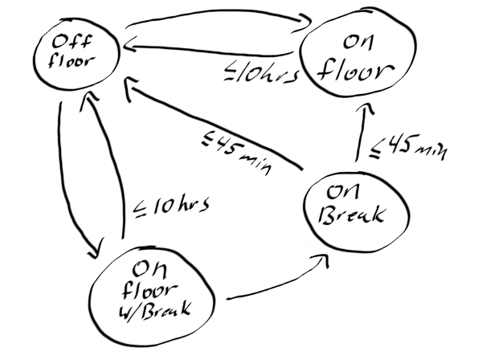
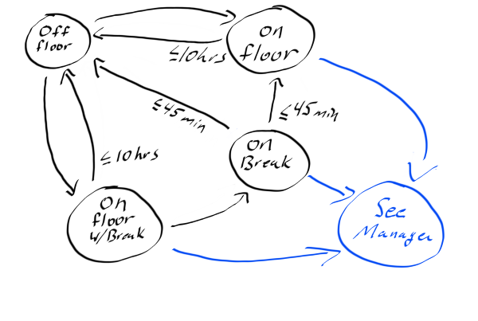

type ContactType =
| Twitter
| Blog
| GitHub
Full name: index.ContactType
| Blog
| GitHub
Full name: index.ContactType
union case ContactType.Twitter: ContactType
union case ContactType.Blog: ContactType
union case ContactType.GitHub: ContactType
val getContactInfo : _arg1:ContactType -> string
Full name: index.getContactInfo
Full name: index.getContactInfo
val Addition_commutative_property : x:int * y:int -> bool
Full name: index.Addition_commutative_property
Full name: index.Addition_commutative_property
val x : int
Multiple items
val int : value:'T -> int (requires member op_Explicit)
Full name: Microsoft.FSharp.Core.Operators.int
--------------------
type int = int32
Full name: Microsoft.FSharp.Core.int
--------------------
type int<'Measure> = int
Full name: Microsoft.FSharp.Core.int<_>
val int : value:'T -> int (requires member op_Explicit)
Full name: Microsoft.FSharp.Core.Operators.int
--------------------
type int = int32
Full name: Microsoft.FSharp.Core.int
--------------------
type int<'Measure> = int
Full name: Microsoft.FSharp.Core.int<_>
val y : int
val Multiplication_even_property : 'a -> y:int -> 'b
Full name: index.Multiplication_even_property
Full name: index.Multiplication_even_property
val _arg1 : 'a
Level Up with Generative Testing
Thank You
About me
- Shane Charles
- White Light Computing, Inc.
- Functional programming enthusiast
- Board member for Full Stack MB
1: 2: 3: 4: 5: 6: |
|
Our Path
- Generative testing
- Property based testing
- Stateful testing
- Testing in the wild
- Wrap up
Has anyone
- had day interrupted by a critical bug
- an evening
- weekend
How'd they get past the tests?
We can't think of everything.
Generative Testing
Getting computers to do the heavy lifting of coming up with test inputs so we don't have to.
Generative Testing Types
- Property based testing
- Stateful testing (Model based testing)
-
Random testing
- Fuzzing
What does generative testing look like?
1: 2: 3: 4: |
|
Python
1: 2: 3: 4: 5: 6: |
|
Clojure
1: 2: 3: 4: 5: 6: 7: 8: |
|
C#
1: 2: 3: 4: 5: 6: 7: 8: 9: 10: 11: 12: 13: 14: |
|
Why should we?
- Looks for undiscovered bugs
- Deeper understanding of domain
- Generates variations we wouldn't
When should we?
- Mission critical functions
-
Complex solutions
- Lots of input variations
- APIs
- End to end
When not?
- Overly simple
- Minimal input variation
- Language primitives
Property Based Testing
Given a subset of inputs, there exists a property which dictates results with a common trait.
Examples
1: 2: |
|
Demo
No more hand waving
Property Patterns
- There and back
- Somethings never change
- Different paths same destination
- Test oracle
Generators
Functions combined together to build complex or narrow input variations.
Common generators
- choose
- elements
- frequency
- constant
- sample
Demo
More code (Don't forget C#)
But we can generate random data in
{unit testing framework}?
- Shrinking
Shrinking sounds slow?
- No
- Yes
- It depends
- It's worth it
Demo
Shrinking FTW
Once upon a time
- Worker uses tag for identification
- Screen prompts available actions for shift
-
Actions:
- Start floor
- End floor
- Start break
- End break
Finite State Machine

Stateful Testing / Model based testing
Simplified model to test the larger
What do we do
-
Create model
- Simplified representation
-
Execute actions (specifications)
- Model
- System
- Check for divergence
Demo
Stateful Testing
Further inspection

Missing state

Question
Who thinks they can benefit from generative testing?
Quviq QuickCheck
What they found
-
Tested +1,000,000 lines (C)
- Using 20,000 lines (erlang)
- Found +200 issues
- Specification errors
- Bugs
-
Incompatibility
- Priority rollover
Jepsen.io
- Testing distributed systems
-
Exercise database CAP constraints
- Consistency
- Availability
- Partition tolerant (network)
Jepsen found
-
MongoDB
- 2013: Major loss of data
- 2015: Dirty reads and some data loss
-
Elasticsearch
- ~34% data loss
-
Redis
- ~56% write loss
-
FaunaDB
- Race conditions
- More at Jepsen.io
Summary
- Better tests?
- Let the computer find the weird issues
- Test things hard to do by hand or regular testing
- Shrinking is awesome
Final
Property Based Testing finds more bugs with less effort
John Hughes
Thank You
1: 2: 3: 4: 5: 6: |
|